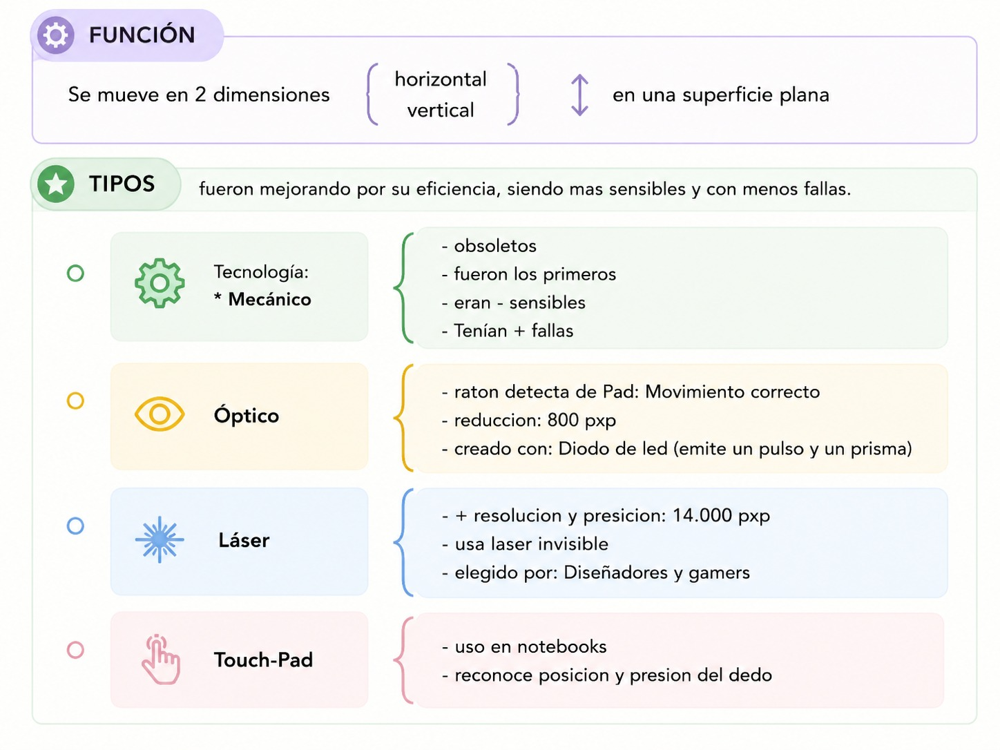
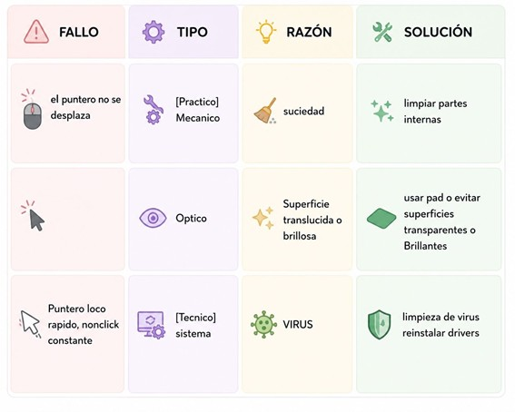

13/03 - ACTIVIDAD GRUPAL - REVISTA TECNICO PC
Revista Estudiada: Técnico PC 12,03,26 \Num: 22
>Perifericos: Teclado, Mouse, Parlante
MOUSE
>¿Que es?
- Dispositivo de entrada
- Diseñado para mover con una mano, ejecuta acciones cien.
- Ejecuta acciones con los botones
Mouse = Raton su nombre va por su forma similitud con un raton

Conexion
- por cable (USB o PS/2) -> antiguo = puerto serie
- por Inalambrico (Infrarrojo o Bluetooth)
DATO
el termino "Click" fue por el sonido que hacia sus botones.
Fallas Tipicas (ejemplos)

La revista recomienda comprar un mouse nuevo ante fallas más tecnicas ya que:
- No es costoso
- Menos tiempo y dinero en repararlo